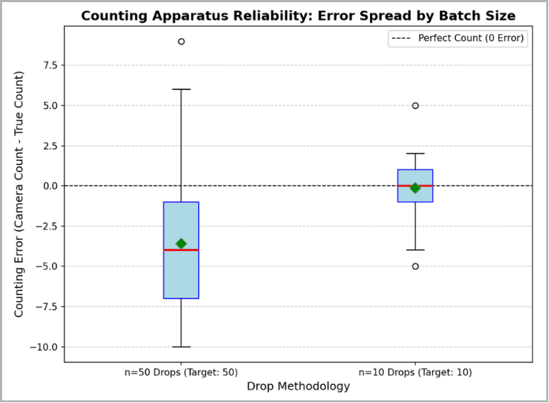
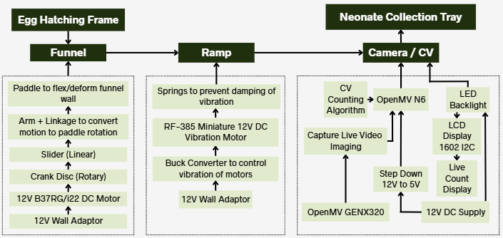
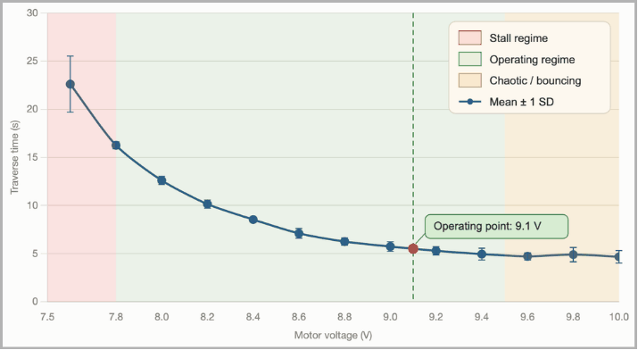

HERMES
Low-Cost Automated Counting & Dispensing for Black Soldier Fly Neonates
/ Project Overview
HERMES is an end-to-end system that singulates and counts newly hatched Black Soldier Fly neonates before they are dispensed into rearing trays. Ento Industries, our industry partner, currently estimates neonate quantity by weighing to three decimal places (1 g ≈ 66,666 neonates) — an estimate that directly governs substrate loading, growth rate and final yield. The only commercial equivalent, Entocycle's Entosight Neo, costs roughly S$440,000. HERMES delivers the same neonate-stage automation from off-the-shelf parts at a per-unit build cost of S$1,120 — under 1% of the incumbent.
The machine is a vertical three-stage pipeline: a deformable TPU funnel tapped by a slider-crank linkage, an inclined vibrating ramp that declumps and singulates the flow, and an event-based camera at the drop zone that counts each neonate as it falls.
/ System Architecture

Orthographic general arrangement — TPU deforming funnel, slider-crank tapping mechanism, vibrating ramp, and event camera counting station on a 2020 aluminium extrusion frame.
/ My Contributions
01. Counting Mechanism & Event-Based Vision
I owned the counting subsystem end to end — sensor selection, optical arrangement at the drop zone, and the firmware that turns raw sensor events into a live neonate count.
Sensor Trade Study — What I Learnt
Choosing the sensor meant first understanding how three fundamentally different imaging architectures sample a scene, and why a neonate — small, fast, sparse, falling at variable speed — breaks most of them:
Line-scan camera
Reconstructs an image one pixel-row at a time as the object crosses a fixed optical line. High effective sampling rate along the scan axis, but demands tight synchronisation between drop speed and line rate — unworkable for neonates falling at slightly variable speed and orientation.
Rolling shutter (e.g. Raspberry Pi camera module)
Exposes each sensor row sequentially rather than simultaneously. On a fast-falling target this introduces motion skew and blur across the frame, and successive frames can miss or double-count objects that cross the field of view faster than the frame interval.
Global shutter
Exposes all pixels at once, so the row-skew problem disappears — but it still samples only at a fixed frame rate. A sufficiently fast or small neonate can fall entirely between two exposures and go undetected, and pushing frame rate up trades off against exposure time, sensitivity and data bandwidth.
Event-based — Prophesee GENX320 (selected)
Each pixel reports brightness change asynchronously and independently at microsecond-scale latency, rather than being read out on a fixed global clock. This removes both the shutter-skew problem and the fixed-sampling-interval problem shared by rolling and global shutter alike — and cuts the data volume, since only changing pixels are transmitted instead of full frames.
The counting firmware runs on an OpenMV board reading the GENX320 in grayscale histogram mode, where each pixel encodes recent event activity rather than absolute intensity — a falling neonate appears as a localised deviation from a flat mid-grey background. Each iteration the snapshot is thresholded outside a narrow mid-grey deadzone, active pixels are grouped into blobs, sub-threshold blobs are discarded as noise, and the remainder are restricted to a horizontal gate band straddling the drop line.
Detections are associated with existing tracks through a vertical-fall motion model: each track predicts its next centroid from its running fall velocity, and detections are matched within a horizontal search window that widens the longer a track goes unmatched. A track is only accepted as a genuine neonate — rather than sensor noise — if it survived a minimum number of frames and produced a minimum net downward displacement.
Two guards protect against double-counting: a short-lived closed-track buffer that reacquires objects reappearing after brief occlusion, and a proximity check against every active track before a detection is allowed to spawn a new one. Both can be overridden by a combined pixel-footprint check — if two blobs together are too large to plausibly be a single neonate, the detection is allowed its own track, since it more likely represents a second neonate falling close behind than a re-detection of the first.

Validated against 1,000 hand-counted proxy pieces: 98.6% mean accuracy at n=10, 92.9% at n=50.
Coincidence-Loss Model
I modelled undercounting as Poisson coincidence loss — two neonates crossing the detection line within a resolvable inter-arrival gap τ are counted as one. With τ measured at 0.57–0.93 ms across three configurations, the model predicts ≥90% accuracy up to λ ≈ 113–185 neonates/s. It correctly predicted both the sign and rough magnitude of the n=50 error before any 50-batch trials were run, which is why capping batch size at n=10 became the operating policy for the final system.
02. System Power Architecture & Wiring
I designed and wired the full mains-powered distribution for the machine, so that three mechanically independent subsystems could share a single wall-powered rail without interfering with one another.

12 V wall-adaptor rails
Each stage is fed from a 12 V mains adaptor rather than batteries — the machine is a bench installation, and continuous operation matters more than portability. Separating the rails keeps the inrush and brush noise of the DC motors off the sensing electronics.
Buck-regulated vibration motor
The RF-385 ramp motor runs through a buck converter rather than straight off 12 V, making the drive voltage a tunable parameter. That made the voltage sweep possible and lets the ramp be re-tuned for different granular loads.
12 V → 5 V step-down for the vision stage
A dedicated step-down feeds the OpenMV board, GENX320 sensor, LED backlight and 1602 I2C display, keeping the logic rail clean and independent of the motor loads switching upstream.

Regulated drive voltage made the three ramp regimes measurable — stall below 7.8 V, stable operation 7.8–9.4 V, chaotic ejection above 9.4 V. Operating point set at 9.1 V.
03. CAD — Counting Chamber & Light Box
Within the overall assembly shown above, I modelled an iteration of the counting area enclosure and the light box holder in Fusion 360 — the structure that fixes the GENX320 relative to the drop line and holds the LED backlight in even, repeatable alignment behind it. Camera-to-drop-zone distance turned out to be a counting-accuracy parameter, not just a packaging one: moving the sensor closer traded field of view for larger, more consistent event blobs and brought live-neonate behaviour in line with what had been validated on filament proxies.
I also modelled smaller supporting parts, including the LCD screen casing.
04. Firmware — Detection, Tracking & Anti-Double-Count Logic
Beyond the sensor selection, I wrote the counting firmware itself — running on the OpenMV board reading the GENX320 in grayscale histogram mode, where each pixel encodes recent event activity rather than absolute intensity, so a falling neonate shows up as a localised deviation from a flat mid-grey background. The core logic below was validated on the RT1062 across six iterations before being carried, unchanged, into a later bring-up on OpenMV's newer N6 board with an added I2C LCD readout.
Detection — per frame
- Threshold every pixel outside a narrow mid-grey deadzone (event vs. no-event)
- Group active pixels into blobs, drop any below a minimum pixel/area noise floor
- Keep only blobs inside a horizontal gate band straddling the drop line
Tracking — vertical-fall matching
- Each active track predicts its next centroid from a running fall-velocity estimate (per-track, blended with a fleet-wide average)
- New detections match the closest prediction inside a horizontal search window that widens the longer a track has gone unmatched
- Match candidates are also bounded by a plausible vertical drop-per-frame range, so a static speck can't be matched onto a falling track
- A track is only accepted as a real neonate — not sensor noise — once it has survived a minimum number of frames and produced a minimum net downward displacement
Two independent double-count guards
Re-merge guard
A track that finalises is held briefly in a closed-track buffer. If a new detection reappears near its last position within a position tolerance and time window, it's treated as the same neonate reacquired after a brief occlusion rather than counted again.
Active-proximity guard
Before a detection is allowed to spawn a brand-new track, it's checked against every currently active track. One that falls inside that track's proximity window is treated as a continuation of the same object and suppressed, instead of spawning a duplicate.
Combined-size split override
Both guards defer to a combined pixel-footprint check: if the two blobs together are too large to plausibly be one neonate, the new detection is allowed to start its own track anyway — it more likely represents a second neonate falling in close succession than a re-detection of the first.
Every count increments a running total that's written to the 16×2 I2C LCD (throttled so display writes never stall the capture loop — line 1 only rewrites when the count actually changes) and logged with its supporting frame count, pixel footprint and net vertical drop, so the tuning parameters above could be sanity-checked against real trial data rather than guessed. Two lighter-weight diagnostics ride alongside the core logic: a size-outlier tag that flags blobs large enough to suggest an unresolved merge, and a split-track tag that flags short, weak tracks against a running healthy-netdrop baseline — both purely informational, surfaced in the logs to guide future tuning rather than changing the count itself.
Engineering practice note
Every hardware-facing call — sensor init, I2C bus/address discovery, individual GENX320 configuration steps — is wrapped in its own try/except with a descriptive log tag, so a failure in one call surfaces as an isolated, fixable bug instead of crashing the whole script or masking which step actually failed. That pattern, and the tracking logic itself, carried unchanged across a board migration (RT1062 → OpenMV N6) with only the I2C pin/address bring-up needing to be re-verified on the new hardware.
/ Results
98.6%
Mean counting accuracy at batch size n=10 (target ≥90%)
100%
Neonate survival and flow-through in live trials
<1%
Of the cost of the incumbent Entosight Neo (S$1,120 vs S$440,000)
Live-neonate trials confirmed full flow-through with zero losses: the TPU funnel released all neonates with no jams, the ramp declumped and advanced the stream at a steady rate, and the event camera detected and counted them at the drop zone. HERMES gives Ento Industries a directly measured count of neonates entering each rearing tray, where the operation previously only had a weight-based estimate.
Next Steps
The remaining accuracy gap is bounded by known remedies: replacing the rule-based blob detector with an ML-based classifier, re-tuning the blob size thresholds to live neonates rather than the filament proxy used for optimisation, and further reducing camera-to-drop-zone distance. Mechanically, a single-piece cast TPU funnel and a frequency-matched bass shaker in place of the vibration motor would give finer control of the sinusoidal profile.
/ Team & Credits
Industry Partner:
- Ento Industries — Black Soldier Fly bioconversion facility, Singapore
Project Team (alphabetical):
- Benedict Julian Danandjaja Antoni
- Bryan Wilson Chandra
- Joshua Loo Yong Jie
- Kng Jia Qing
- Phelia Hoe Ying Qian
- Puah Yi Da
- Sng Ming Xiang
- Too Zhan Yue